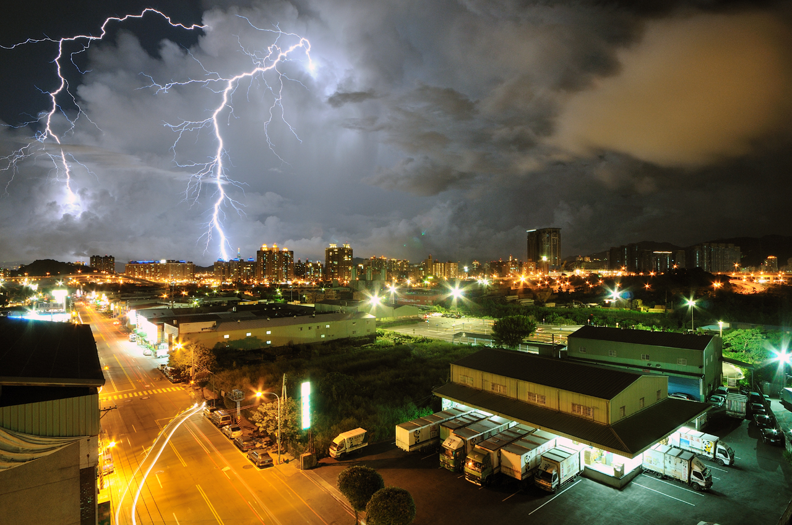
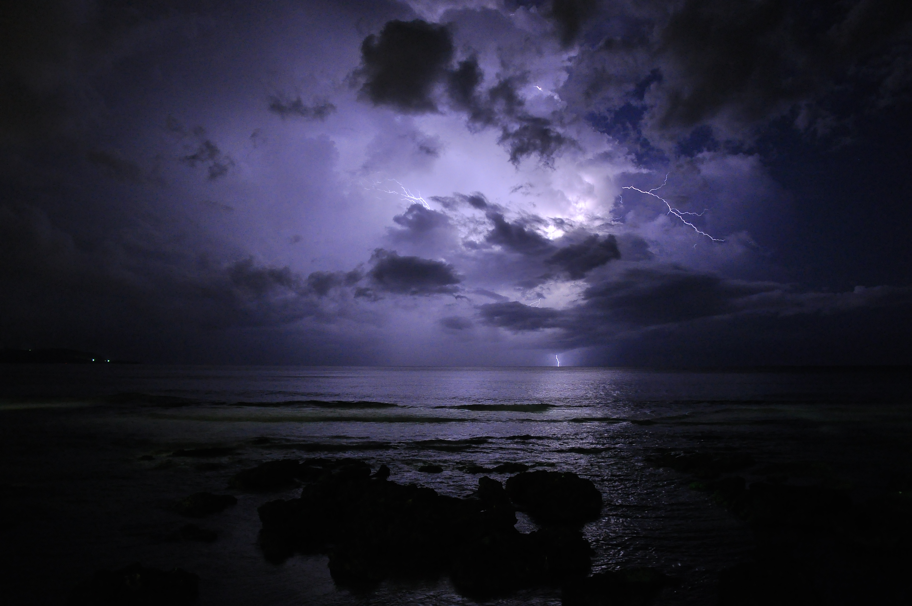
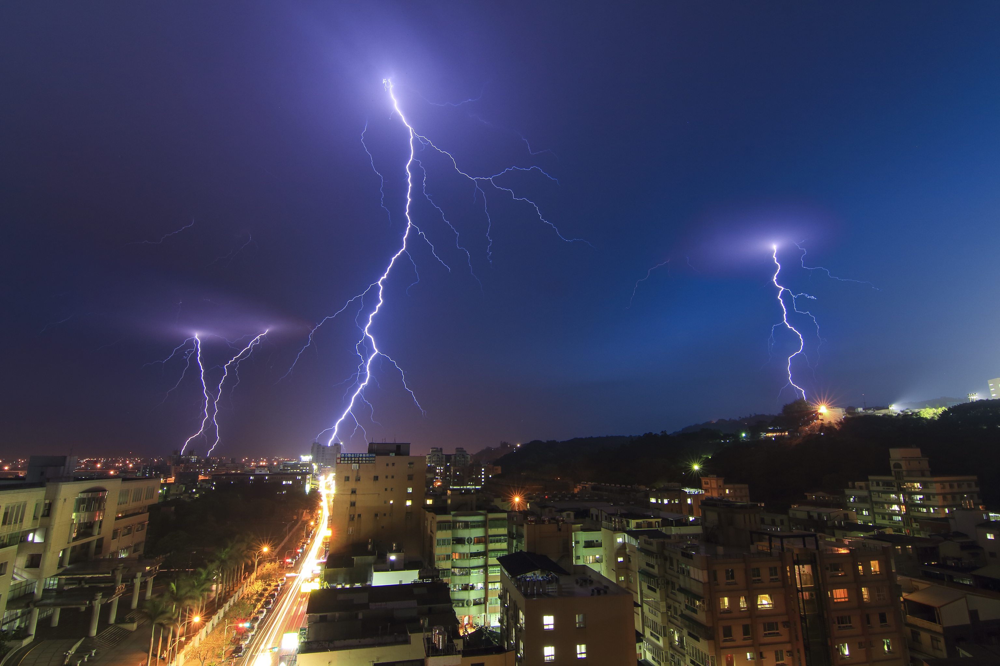

閃電圖片集

Photo from flickr by 昶銓
Photo from flickr by aishia
Photo from flickr by aishia
Photo from flickr by aishia
Photo from flickr by aishia
Photo from flickr by Arfa Chen
Photo from flickr by chang xian xie
Photo from flickr by 博順 莊

Photo from flickr by 阿虔 鄭

Photo from flickr by jerrychen888

Photo from flickr by 柏輝 楊
Photo from flickr by sprestonphotography